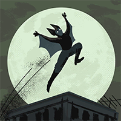
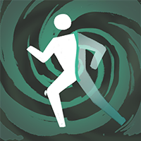
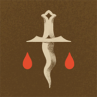

Helden › Assassine
Pocket ist ein spielbarer Held in Deadlock. Arin Fairfax überlebte ein Attentat am 18. Geburtstag und lebt seither versteckt unter dem Namen „Pocket“. Ihr magischer Koffer und der fliegende Umhang machen sie im Gefecht praktisch unfassbar.
Hintergrund
Arin Fairfax, ältestes Kind und Erbe von Fairfax Industries, lebt seit fünf Jahren im Verborgenen — seit sie an ihrem 18. Geburtstag angeschossen und für tot zurückgelassen wurden. Wer verhindern will, dass Arin die Kontrolle über das Unternehmen der Eltern übernimmt? In dem von Habgier zerfressenen Vipernnest, das Fairfax Industries ist, könnte es jeder sein.
Unter dem Namen „Pocket“ hütet Arin die eigene Identität — nicht nur zum Schutz, sondern auch, um sich ein Leben unabhängig vom Erbe der Eltern aufzubauen.
Spielstil
Mit kräftiger Schrotflinte und schmaler Silhouette verlässt sich Pocket darauf, brenzligen Momenten in den mystischen Koffer zu entkommen und per fliegendem Umhang zu teleportieren — hinein in die Backline, Schaden abladen, und wieder hinaus.
Fähigkeiten
Barrage
Taste 1Kanalisiertes Projektil-Bombardement: Geist-Schaden und Verlangsamung im Einschlagsbereich; Heldentreffer stapeln Bonus-Schaden.
Abklingzeit: 32 s
Flying Cloak
Taste 2Wirft einen lebendigen Umhang, der Gegner auf seinem Weg schädigt — erneutes Aktivieren teleportiert Pocket zu ihm.
Abklingzeit: 25 s
Enchanter's Satchel
Taste 3Flucht in den verzauberten Koffer: kurz untargetbar, beim Verlassen Geist-Schaden an umstehende Gegner.
Abklingzeit: 17 s
Affliction
Taste 4 UltimateBelegt Gegner in der Nähe mit anhaltendem, nicht-tödlichem Schaden über Zeit.
Abklingzeit: 170 s
Basiswerte
| Wert | Basis (Stufe 1) | Kategorie |
|---|---|---|
| Maximale Gesundheit | 780 | Vitalität |
| Gesundheitsregeneration | 1 / s | Vitalität |
| Lauftempo | 7,2 m/s | Bewegung |
| Sprint-Bonus | +1,6 m/s | Bewegung |
| Ausdauer | 3 | Bewegung |
| Leichter Nahkampfschaden | 60 | Waffe |
| Schwerer Nahkampfschaden | 116 | Waffe |
Beliebte Builds
Diese Daten stammen direkt aus dem Build-Browser im Spiel: die drei meistfavorisierten Builds für Pocket, sortiert nach der Zahl der Spieler, die sie gespeichert haben. Klick einen Build an, um die Item-Reihenfolge zu sehen.
№1 Carney - Pocket Gaming 157.393 Favoriten
„1 2 2 3 3 1 4 4 2 then either max 1 for the insane heal, 4 if your finding good impact from ulti. New 3 max does not seem strong, but will have to play and test it.“








№2 Wulfee7 Twitch - BEST POCKET BUILD GUN ( 90% WR ) 87.860 Favoriten
„https://www.twitch.tv/wulfee7“


№3 Spirit Tempo - Gami 35.654 Favoriten
„- With yet another round of gun nerfs it looks like we need to ultbot even harder... - Check back for changes as I'm always trying to improve the build, especially just after a patch, and message me in the Discord if yo…“





Warum sind das die besten Builds?
Die drei Builds wurden zusammen über 280.907-mal von Spielern gespeichert — Favoriten sind das stärkste Qualitätssignal im Build-Browser, denn ein Build, den so viele Spieler über Monate und Patches hinweg behalten, hat sich in echten Matches bewährt. Die Builds mischen alle drei Kategorien — ein Zeichen dafür, dass Pocket flexibel gespielt wird und je nach Matchup Waffe, Überleben oder Fähigkeiten priorisiert. Als Einstieg gilt: Folge der Item-Reihenfolge des №1-Builds Kategorie für Kategorie und passe erst mit wachsender Erfahrung an dein Matchup an.
Trivia
- Pockets interner Klassenname in den Spieldaten lautet
hero_synth. - Die Spieldaten führen den Helden mit den Tags Trickster, Burst Damage, Frogs.
- Die Einstiegskomplexität liegt bei 2 von 3 — Kategorie „Fortgeschritten“.